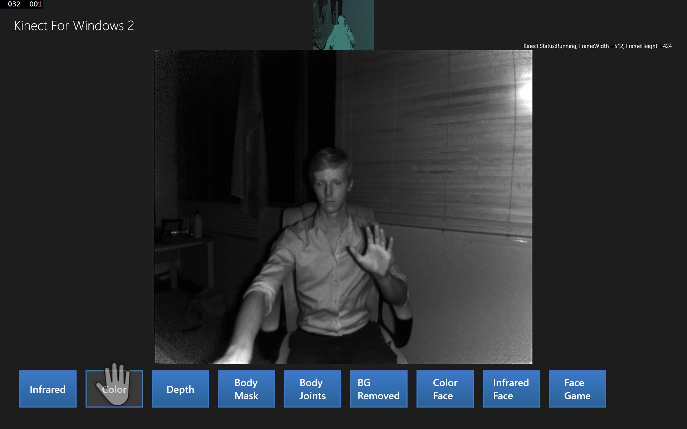

The Hands On Labs to complete a sample application for Windows 8.1 and the Kinect 2 for Windows
Estimated Time to Complete: 40min
This lab is part of a series of hands on labs which teach you how to create a Windows 8.1 Store Application using almost every available feature of the Kinect 2. This is the tenth lab in the series, and it teaches you how to use the Kinect 2 to use the active users hand to represent a cursor within the application. This hand cursor has simliar actions to a mouse.
This lab will explain the following:
The app is going to utilize a new control called the KinectRegion. The KinectRegion control sits above the application interface and shows a cursor simulating the users hand. All presses from the cursor are registered as mouse events within the application, this means that no buttons need to change for the Kinect input to work.
When the input changes for an application it's important to adapt the design also. The user may be standing up when they use the kinect, and as they will be further from the screen, you will make all the Display Frames full screen when they are first active.
This lab, and all subsequent labs in this series, are built using C# and
assume you have a fundamental knowledge of the C# language.
The screenshots here are from Visual Studio Community Edition.
To use the Hand cursor, you must add references to two Microsoft Extension Libraries for Kinect input:
The content of the app is in a layer within the KinectRegion. Above the KinectRegion is a layer which renders the hand cursor, as well as a view of the depth stream, highlighting the active user. To set this up you need a new style for the KinectRegion object, which will be in a new Resource Dictionary:
Within this Resource Dictionary you're going to create a new style for a KinectRegion which will provide the CursorRenderingLayer and the KinectUserViewer on top of the content. Then when you use the KinectRegion, it will use this style. Copy the new highlighted text into the KinectRegionStyles Resource Dictionary:
<ResourceDictionary
xmlns="http://schemas.microsoft.com/winfx/2006/xaml/presentation"
xmlns:x="http://schemas.microsoft.com/winfx/2006/xaml"
xmlns:local="using:Kinect2Sample"
xmlns:k="using:Microsoft.Kinect.Xaml.Controls">
<ExponentialEase x:Key="VisualStateEasingFunction" Exponent="7" />
<Style TargetType="k:KinectRegion">
<Setter Property="Template">
<Setter.Value>
<ControlTemplate TargetType="k:KinectRegion">
<Border
Background="{TemplateBinding Background}"
BorderBrush="{TemplateBinding BorderBrush}"
BorderThickness=
"{TemplateBinding BorderThickness}"
>
<Grid>
<ContentPresenter x:Name="contentHolder" />
<!-- only change from default KinectRegion
style, is the addition of a user viewer
under cursor layer,
but above content -->
<k:KinectUserViewer Height="100"
Width="121"
HorizontalAlignment="Center"
VerticalAlignment="Top" />
<Canvas x:Name="cursorRenderingLayer"
Background="{x:Null}"/>
</Grid>
</Border>
</ControlTemplate>
</Setter.Value>
</Setter>
</Style>
</ResourceDictionary>
Open the App.xaml and include this ResourceDictionary as a MergedDictionary for the application to use.
<Application
x:Class="Kinect2Sample.App"
xmlns="http://schemas.microsoft.com/winfx/2006/xaml/presentation"
xmlns:x="http://schemas.microsoft.com/winfx/2006/xaml"
xmlns:local="using:Kinect2Sample">
<Application.Resources>
<ResourceDictionary>
<ResourceDictionary.MergedDictionaries>
<!--
Styles that define look and feel of Kinect controls
-->
<ResourceDictionary Source="KinectRegionStyles.xaml"/>
</ResourceDictionary.MergedDictionaries>
</ResourceDictionary>
</Application.Resources>
</Application>
Open the App code behind file (App.xaml.cs) and add a new public KinectRegion Property. In the OnLaunched handler method where the root content of the Window.Current is set: change this to set the content to a new KinectRegion. Set the rootFrame as the content of the KinectRegion.
using Microsoft.Kinect.Xaml.Controls;//... namespace Kinect2Sample { sealed partial class App : Application {///<summary>/// Gets the app level KinectRegion element,///which is created in App.xaml.cs///</summary>public KinectRegion KinectRegion { get; private set; }//... protected override void OnLaunched(LaunchActivatedEventArgs e) { #if DEBUG if (System.Diagnostics.Debugger.IsAttached) { this.DebugSettings.EnableFrameRateCounter = true; } #endif Frame rootFrame = Window.Current.Content as Frame; // Do not repeat app initialization when the Window already // has content, just ensure that the window is active if (rootFrame == null) { // Create a Frame to act as the navigation context // and navigate to the first page rootFrame = new Frame(); // Set the default language rootFrame.Language = Windows.Globalization.ApplicationLanguages.Languages[0]; rootFrame.NavigationFailed += OnNavigationFailed; if (e.PreviousExecutionState == ApplicationExecutionState.Terminated) { //TODO: Load state from previously // suspended application }// Create a CursorLayer that listens to// KinectPointerPoints/GestureRecognizers// and works with the affected controls.KinectRegion = new KinectRegion();KinectRegion.Content = rootFrame;// Place the frame in the current Window,// with a Kinect cursor layer + user viewer controlWindow.Current.Content = KinectRegion;} if (rootFrame.Content == null) { // When the navigation stack isn't restored // navigate to the first page, // configuring the new page by passing required // information as a navigation // parameter rootFrame.Navigate(typeof(MainPage), e.Arguments); } // Ensure the current window is active Window.Current.Activate(); }
Build and Run the application. Hold your hand up and keep it visible for a second or two, the Hand cursor will become visible and your silhouette will highlight green at the top of the screen.
You can move the hand cursor around and push your hand forward to press on an active control, like the buttons at the bottom of the screen.

Given that it's now possible to use the app while standing and away from the screen, it would be nice to have the selected feed become full screen by default so it's easier to see from a distance.
You want to add functionality so that when you click a button the feed becomes full screen, then if you click a back button, it changes to the usual size, revealing the other option buttons again.
Using the Kinect hand cursor is simliar using the finger to touch in a touch interface. The buttons must be bigger, or rather, their active click field must be bigger because the Kinect cursor is massive compared to the mouse or touch. Open the KinectRegionStyles.xaml Resource Dictionary and add the following button style:
This button is much easier to hit with the Kinect cursor, you can use it when the feed is fullscreen.<!-- BackButtons have a small visible area. The changes in this style (change margin to padding, set kinectpressinset, add border to template to support padding) enable a larger hit test region Open the MainPage.xaml.cs and in the SetupCurrentDisplay, you can change the method to take an isFullScreen parameter and use this to effect the grid layout of the page. for HandPointers --><Style x:Key="KinectBackButtonStyle" TargetType="Button"><Setter Property="MinWidth" Value="48"/><Setter Property="MinHeight" Value="48"/><Setter Property="Padding" Value="36,56,36,36" /><Setter Property="k:KinectRegion.KinectPressInset"Value="36,56,36,36" /><Setter Property="VerticalAlignment" Value="Top"/><Setter Property="FontFamily" Value="Segoe UI Symbol"/><Setter Property="FontWeight" Value="Normal"/><Setter Property="FontSize" Value="56"/><Setter Property="AutomationProperties.AutomationId"Value="BackButton"/><Setter Property="AutomationProperties.Name" Value="Back"/><Setter Property="AutomationProperties.ItemType"Value="Navigation Button"/><Setter Property="Template"><Setter.Value><ControlTemplate TargetType="Button"><Grid x:Name="RootGrid"><Border Padding="{TemplateBinding Padding}"Background="Transparent"><Grid Margin="-1,-16,0,0"><TextBlock x:Name="BackgroundGlyph"Text="" Foreground="{StaticResourceBackButtonBackgroundThemeBrush}"/><TextBlock x:Name="NormalGlyph"Text="" Foreground="{StaticResourceBackButtonForegroundThemeBrush}"/><TextBlock x:Name="ArrowGlyph"Text="" Foreground="{StaticResourceBackButtonPressedForegroundThemeBrush}"Opacity="0"/></Grid></Border><Rectanglex:Name="FocusVisualWhite"IsHitTestVisible="False"Stroke="{StaticResourceFocusVisualWhiteStrokeThemeBrush}"StrokeEndLineCap="Square"StrokeDashArray="1,1"Opacity="0"StrokeDashOffset="1.5"/><Rectanglex:Name="FocusVisualBlack"IsHitTestVisible="False"Stroke="{StaticResourceFocusVisualBlackStrokeThemeBrush}"StrokeEndLineCap="Square"StrokeDashArray="1,1"Opacity="0"StrokeDashOffset="0.5"/><VisualStateManager.VisualStateGroups><VisualStateGroup x:Name="CommonStates"><VisualState x:Name="Normal" /><VisualState x:Name="PointerOver"><Storyboard><ObjectAnimationUsingKeyFramesStoryboard.TargetName="BackgroundGlyph"Storyboard.TargetProperty="Foreground"><DiscreteObjectKeyFrameKeyTime="0"Value="{StaticResourceBackButtonPointerOverBackgroundThemeBrush}"/></ObjectAnimationUsingKeyFrames><ObjectAnimationUsingKeyFramesStoryboard.TargetName="NormalGlyph"Storyboard.TargetProperty="Foreground"><DiscreteObjectKeyFrameKeyTime="0" Value="{StaticResourceBackButtonPointerOverForegroundThemeBrush}"/></ObjectAnimationUsingKeyFrames></Storyboard></VisualState><VisualState x:Name="Pressed"><Storyboard><ObjectAnimationUsingKeyFramesStoryboard.TargetName="BackgroundGlyph"Storyboard.TargetProperty="Foreground"><DiscreteObjectKeyFrameKeyTime="0" Value="{StaticResourceBackButtonForegroundThemeBrush}"/></ObjectAnimationUsingKeyFrames><DoubleAnimationStoryboard.TargetName="ArrowGlyph"Storyboard.TargetProperty="Opacity"To="1"Duration="0"/><DoubleAnimationStoryboard.TargetName="NormalGlyph"Storyboard.TargetProperty="Opacity"To="0"Duration="0"/></Storyboard></VisualState><VisualState x:Name="Disabled"><Storyboard><ObjectAnimationUsingKeyFramesStoryboard.TargetName="RootGrid"Storyboard.TargetProperty="Visibility"><DiscreteObjectKeyFrameKeyTime="0"Value="Collapsed"/></ObjectAnimationUsingKeyFrames></Storyboard></VisualState></VisualStateGroup><VisualStateGroup x:Name="FocusStates"><VisualState x:Name="Focused"><Storyboard><DoubleAnimationStoryboard.TargetName="FocusVisualWhite"Storyboard.TargetProperty="Opacity"To="1"Duration="0"/><DoubleAnimationStoryboard.TargetName="FocusVisualBlack"Storyboard.TargetProperty="Opacity"To="1"Duration="0"/></Storyboard></VisualState><VisualState x:Name="Unfocused" /><VisualState x:Name="PointerFocused" /></VisualStateGroup></VisualStateManager.VisualStateGroups></Grid></ControlTemplate></Setter.Value></Setter></Style>
Open the MainPage.xaml and name the root grid so you can change the row sizes later, then add a regular button at the bottom of the xaml (which will place it above everything else) which applies the new KinectBackButtonStyle.
<Grid Background="{ThemeResource ApplicationPageBackgroundThemeBrush}" >
<Grid x:Name="RootGrid" Margin="30">
<Grid.RowDefinitions>
<RowDefinition Height="70"/>
<RowDefinition Height="*"/>
<RowDefinition Height="100"/>
</Grid.RowDefinitions>
<!--...-->
<ScrollViewer Grid.Row="2"
ScrollViewer.HorizontalScrollBarVisibility="Auto"
ScrollViewer.VerticalScrollBarVisibility="Auto">
<!--...-->
</ScrollViewer>
<Button x:Name="FullScreenBackButton"
Style="{StaticResource KinectBackButtonStyle}"
Grid.Row="1"
HorizontalAlignment="Left"
VerticalAlignment="Top"
Click="FullScreenBackButton_Click"
Visibility="Collapsed"/>
</Grid>
</Grid>
Open the MainPage.xaml.cs and in the SetupCurrentDisplay method, change the method to take an isFullScreen parameter and use this to effect the grid layout of the page. The isFullScreen parameter will default to true so many of the button click events do not need to change.
private void SetupCurrentDisplay(DisplayFrameType newDisplayFrameType
, bool isFullScreen = true)
{
if (isFullScreen)
{
RootGrid.RowDefinitions.Clear();
RootGrid.RowDefinitions.Add(new RowDefinition()
{ Height = new GridLength(0)});
RootGrid.RowDefinitions.Add(new RowDefinition()
{ Height = new GridLength(1, GridUnitType.Star) });
RootGrid.RowDefinitions.Add(new RowDefinition()
{ Height = new GridLength(0) });
FullScreenBackButton.Visibility =
Windows.UI.Xaml.Visibility.Visible;
}
else
{
RootGrid.RowDefinitions.Clear();
RootGrid.RowDefinitions.Add(new RowDefinition()
{ Height = new GridLength(70) });
RootGrid.RowDefinitions.Add(new RowDefinition()
{ Height = new GridLength(1, GridUnitType.Star) });
RootGrid.RowDefinitions.Add(new RowDefinition()
{ Height = new GridLength(100) });
FullScreenBackButton.Visibility =
Windows.UI.Xaml.Visibility.Collapsed;
}
CurrentDisplayFrameType = newDisplayFrameType;
// Frames used by more than one type are declared outside the switch
The app should not render full screen when it first runs, so in the MainPage_Loaded method, change its use of SetupCurrentDisplay:
void MainPage_Loaded(object sender, RoutedEventArgs e)
{
SetupCurrentDisplay(DEFAULT_DISPLAYFRAMETYPE, false);
SetupCatAssets();
}
Finally add the FullScreenButton_Click handler method to the bottom of the MainPage class, which will setup the same display, but not render full screen:
private void FullScreenBackButton_Click(object sender,RoutedEventArgs e){SetupCurrentDisplay(CurrentDisplayFrameType, false);}
Build and Run the application, and you can make the feeds full screen, and return from full screen with the back button.
This lab explained how to use the Kinect Input library to show a Hand Cursor overlaid on an application. As you can see, the use of a hand cursor is extremely smooth and accurate. There are a few more gestures for the hand to replace the scroll feature of the mouse, if you grip your hand on a scrollable field then you can navigate it by moving your hand, like the scrollbar on a mouse but in any direction.
The Kinect 2 hand cursor is an ideal replacement for touch when the user is detached from the screen, for example behind glass in a store front. It is also a cheaper solution than many expensive and inaccurate touch screens for large panels.
The next lab will begin from the code completed in this lab code.